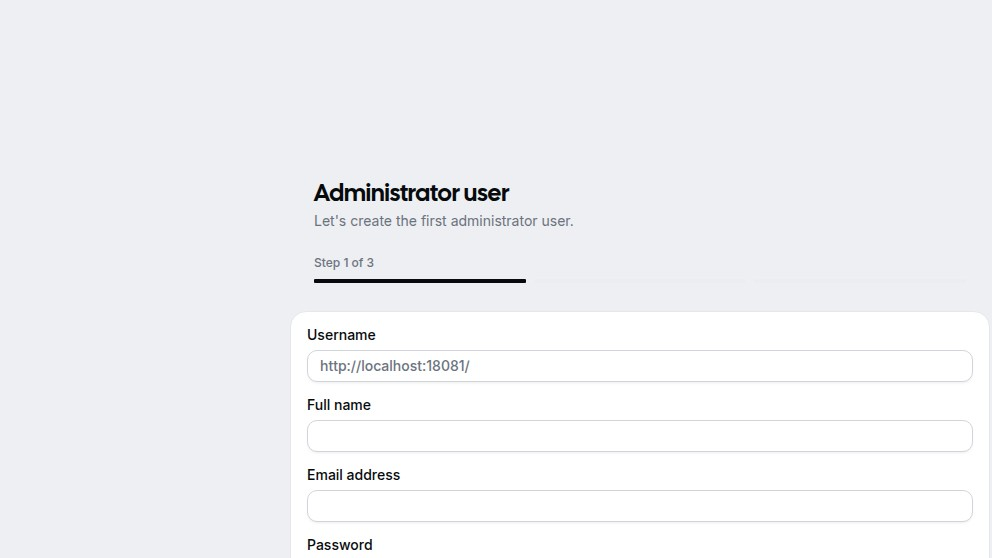

Cal.com 6.16.1 self-host: the migrations don't run on boot
The official calcom/cal.com:latest image starts a Next.js app, listens on port 3000, and dutifully redirects you from / to /auth/login. What it does not do is run prisma migrate deploy against the Postgres you wired up. The container ends up in a fast crash loop with the same Prisma error in every log line, and the only signal in the browser is a generic Next.js 500. Here's the exact log, the two-step fix, and the resource numbers from a real install.
We're the team behind SimpleReview, a Chrome extension that drafts code-fix PRs on whatever site you click. Not affiliated with Cal.com. This page is a deployment note from one real install on one Linux box, dated above. If we got something wrong, open a GitHub issue and we'll fix it.
The exact docker run we used
# 1. Postgres sidecar
docker run -d --name calpg \
-e POSTGRES_USER=cal \
-e POSTGRES_PASSWORD=cal \
-e POSTGRES_DB=calendso \
postgres:15-alpine
# 2. The app — what the README more or less suggests
docker run -d --name caltest -p 18081:3000 \
--link calpg:db \
-e DATABASE_URL="postgresql://cal:cal@db:5432/calendso" \
-e NEXTAUTH_URL="http://localhost:18081" \
-e NEXT_PUBLIC_WEBAPP_URL="http://localhost:18081" \
-e NEXTAUTH_SECRET="$(openssl rand -base64 32)" \
-e CALENDSO_ENCRYPTION_KEY="$(openssl rand -base64 24)" \
calcom/cal.com:latestThe container starts, listens on 3000, and HTTP-307 redirects / to /auth/login. So far so good — except that Postgres is a fresh DB with no schema, and the image never ran a migration.
What "/" does when there's no schema
Hitting any page produces this log spam in the container:
@calcom/web:start: Invalid `prisma.user.findFirst()` invocation:
@calcom/web:start:
@calcom/web:start: The table `public.users` does not exist in the current database.
@calcom/web:start: at async m (.next/server/chunks/ssr/...)
@calcom/web:start: Error [PrismaClientKnownRequestError]:
@calcom/web:start: code: 'P2021',
@calcom/web:start: meta: [Object],
@calcom/web:start: clientVersion: '6.16.1',The calcom/cal.com:latest image (digest sha256:ace3bb1219fb… as of 2026-05-07) does not include a startup hook that runs prisma migrate deploy. It boots the Next.js production server immediately. Every page-load that tries to look up a user (which is to say, every page that isn't a static asset) hits Prisma error P2021 — Table 'public.users' does not exist.
The browser sees a generic Next.js 500. The container is technically "Up" and the docker-level healthcheck (if you wired one) reports green. The actual bug is invisible unless you tail the container logs.
Step 1 — run the migrations manually
Prisma 6 wants both DATABASE_URL (pooled) and DATABASE_DIRECT_URL (unpooled, for migrations). The Cal.com schema sets directUrl = env("DATABASE_DIRECT_URL"), so omitting it makes prisma migrate deploy fail validation:
Error: Prisma schema validation
error: Environment variable not found: DATABASE_DIRECT_URL.
--> packages/prisma/schema.prisma:7
|
6 | url = env("DATABASE_URL")
7 | directUrl = env("DATABASE_DIRECT_URL")Set it (the same connection string is fine for a single-Postgres self-host) and run the migration from inside the running container:
docker exec \
-e DATABASE_DIRECT_URL="postgresql://cal:cal@db:5432/calendso" \
caltest \
sh -c "cd /calcom && npx -y prisma migrate deploy --schema=packages/prisma/schema.prisma"This applied just over three hundred migrations end-to-end on the empty database — every schema change Cal.com has shipped from 2022 to mid-2026. Took about 60 seconds on a fast NVMe Postgres. The final line is a clean All migrations have been successfully applied.
Step 2 — restart the app
Prisma's client caches the introspected schema at process start. Even after the migration, the running Next.js server keeps throwing P2022 — column does not exist until you restart it:
docker restart caltest1. Run the migration with both DATABASE_URL and DATABASE_DIRECT_URL set.
2. Restart the app container so Prisma re-introspects the new schema.
For unattended deploys, wrap these into your image's ENTRYPOINT with something like npx prisma migrate deploy && npm run start, or use a sidecar init container.
After the restart, /auth/setup?step=1 renders the three-step Administrator user wizard:

NEXT_PUBLIC_WEBAPP_URL as a slug prefix — quick way to verify that env var is right.Resource numbers
| Phase | Wall clock | Notes |
|---|---|---|
docker run → first 307 | ~30 s | Image already pulled, Postgres already healthy |
prisma migrate deploy | ~60 s | Empty DB → ~300 migrations applied |
| Container restart → wizard | ~25 s | Next.js cold start once schema is current |
| App RAM at idle | 1.13 GiB | After wizard renders, no users created yet |
| Postgres RAM at idle | 50 MiB | Fresh schema, no traffic |
| Container disk write | ~350 MB | Mostly Next.js trace cache + node modules in .next |
So the true cold-start time on a clean machine is around two minutes end-to-end, dominated by the migration step. Plan for it in your deploy pipeline; it's not a thirty-second job.
Quiet warnings worth knowing about
Even after the wizard renders, the container log throws three warnings on every restart that don't surface in the UI:
EMAIL_FROM environment variable is not set, this may indicate mailing is currently disabled.— true, and it means password-reset, booking confirmation, and invites all silently no-op. SetEMAIL_FROM+ an SMTP provider before sharing the URL with anyone who'll book a meeting.[Phase: phase-production-server] Skipping rewrite config for organizations because ORGANIZATIONS_ENABLED is not set— fine if you don't need teams, but the multi-tenant feature is a hidden flag.[WebPush] Missing VAPID keys. Web push notifications are disabled.— Cal.com supports browser push reminders; without VAPID keys you won't get them.npx web-push generate-vapid-keys, then set the public/private pair in env.
Things we'd change in the docker README
- Bake migrate-on-boot into the image. An
entrypoint.shthat runsprisma migrate deployon first start — and is a no-op when there's nothing to migrate — would eliminate the most common self-host failure mode. - Document
DATABASE_DIRECT_URL. The schema requires it; the README sample.envonly showsDATABASE_URL. Most users find out the hard way. - Surface env warnings on the login screen. A small "running with degraded features (mail disabled, push disabled)" banner during initial setup would catch the silent footguns above.
- Provide a one-shot Compose example with both containers, network, and volume. The current docs link to a separate
calcom/dockerrepo whose state lagscal.commain; a self-containedcompose.yamlin the main repo would beat any external example.
Where this fits
One short, honest write-up per self-hostable booking/scheduling/CMS tool we actually run on a real Linux box. Adjacent: Dify 1.14.0 — the profile flag the README forgets, Open WebUI on Linux Docker — first 90 seconds, measured. SimpleReview is the Chrome extension that turns whatever element you click on a broken admin into a draft code-fix PR — Cal.com setup wizards included.
Demo: SimpleReview on the Cal.com setup wizard

The table `public.users` does not exist
code: 'P2021' · clientVersion: '6.16.1'
npx prisma migrate deploy
All migrations have been successfully applied.
→ /auth/setup?step=1 · 200 OK · wizard rendered
prisma migrate deploy with DATABASE_DIRECT_URL, then restart